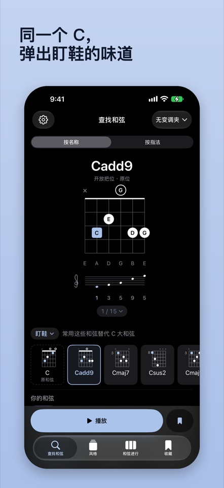
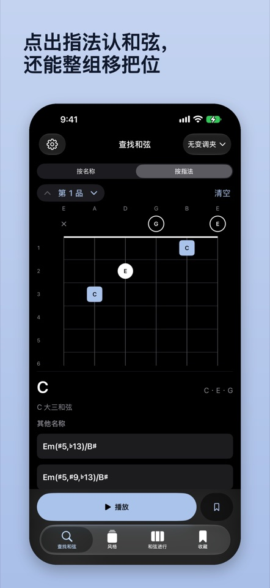
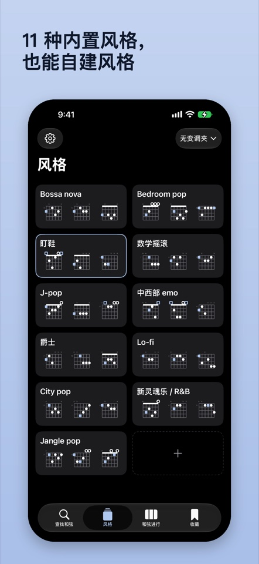
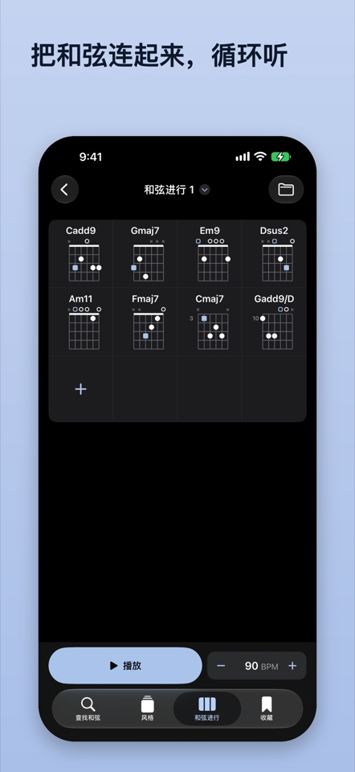

告别无聊和弦。
选一个基础和弦，立刻得到该音乐风格里吉他手真正会弹的精彩指法。覆盖 11 种风格、5 种调弦与离线原声试听。
适用于 iPhone 与 iPad · 离线可用 · 无广告 · 无订阅
Cadd9
Cmaj7
Eadd9
Amaj9
Am9
点击上方风格切换指法并试听——方格标记根音，底部标注每根发声弦的音名。
看看 add9 在 iPhone 上的真实界面
从查找和弦、指板反查、按风格探索到编排和弦进行，全程离线流畅运行。




按音乐风格探索吉他和弦
收录 222 个经过校对的真实可弹指法，点击任意风格即可在线查看指板图并试听。
数学摇滚
22 个指法标准调弦的紧凑指型，与 FACGCE 调弦中持续共鸣的延伸音。
盯鞋
24 个指法持续共鸣的高音、宽音程挂留和弦与稀疏的七和弦。
新灵魂乐 / R&B
16 个指法大小九和弦与变化属和弦。
中西部 emo
21 个指法高音空弦持续音与明亮的延伸音。
爵士
19 个指法七和弦 Shell 指型、Drop 指型与变化属和弦。
J-pop
21 个指法IV–iii–vi 进行中的七和弦连接、保留五度的指型与富有色彩的摇滚和弦。
City pop
16 个指法紧凑的七、九和弦，高音弦切音指型与变化属和弦。
Bossa nova
10 个指法六九主和弦、小六与小九和弦，以及拇指低音上的降五属和弦。
Lo-fi
16 个指法柔和的七和弦、转位指型与六九和弦色彩。
Jangle pop
33 个指法沿指板移动的和弦指型，与空弦的共鸣交织。
Bedroom pop
24 个指法歌曲教学中的横按与开放七和弦，加上 Open D 持续音。
为认真练琴和写歌的人设计
按风格替换和弦
输入普通 C 或 Am，立刻查看爵士、盯鞋、数学摇滚、新灵魂乐或 J-pop 中对应的精彩延伸与转位指法。
按指型反查 + 可移动把位
在指板上点出你偶然按到的怪和弦，立刻识别和弦名，并可整把位上下移动、保留空弦共鸣。
真实音高的变调夹与特殊调弦
支持标准调弦、FACGCE、Open D、Open E、升全音调弦以及 0–12 品变调夹，指板图与和弦名同步换算实际音高。
收藏具体指法与创建进行
将喜欢的具体指法归入自定义风格，自由串联和弦进行、调节速度并离线原声回放。
把 11 种风格与完整和弦库装进口袋
无需登录，无广告，不追踪隐私。所有和弦图、反查引擎与吉他原声合成全部本地离线运行。